Introducción
Dentro del uso de redes exsisten distintos componentes que, en conjunto, conforman la red local ya sea como nodos de salida, de transmisión, de entrada, etc. Estos componentes, principalmente de hardware, tienen cada uno su función para mantener la transmisión de datos dentro de la red local y hacia una red mayor ya sea internet o alguna red a nivel superior, incluso para extender dicha red local. En esta práctica se ilustran algunos de los elementos más comúnes que participan en las redes locales domésticas y de instituciones.
Objetivos
Objetivo General
Conocer, investigar e identificar los elementos que se utilizan para configurar una red local y el acceso a recursos de un equipo en red.
Objetivos específicos
- Utilizando el programa de Packet Tracer de Cisco, simula las siguientes redes de computadora, asignando a las computadoras las IP pertenecientes a la red 192.168.0.0, utilizando la ventana de comandos utiliza la función ping para verificar la comunicación entre cada una de las computadoras. Graba un video de cada red simulada.
- Elabora por cada red una tabla comparativa de cada elemento de red.
- Elabora una tabla comparativa evaluando el tipo de cable (cruzado y directo) dependiendo de los dispositivos y como se conectan.
Marco Teórico
Estaciones de trabajo: Cada computadora conectada a la red conserva la capacidad de funcionar de manera independiente, realizando sus propios procesos. Asimismo, las computadoras se convierten en estaciones de trabajo en red, con acceso a la información y recursos contenidos en el servidor de archivos de la misma. Una estación de trabajo no comparte sus propios recursos con otras computadoras. Esta puede ser desde una PC XT hasta una Pentium, equipada según las necesidades del usuario; o también de otra arquitectura diferente como Macintosh, Silicon Graphics, Sun, etc.
Cableado: La LAN debe tener un sistema de cableado que conecte las estaciones de trabajo individuales con los servidores de archivos y otros periféricos. Si sólo hubiera un tipo de cableado disponible, la decisión sería sencilla. Lo cierto es que hay muchos tipos de cableado, cada uno con sus propios defensores y como existe una gran variedad en cuanto al costo y capacidad, la selección no debe ser un asunto trivial.
- Cable de par trenzado: Es con mucho, el tipo menos caro y más común de medio de red.
- Cable coaxial: Es tan fácil de instalar y mantener como el cable de par trenzado, y es el medio que se prefiere para las LAN grandes.
- Cable de fibra óptica: Tiene mayor velocidad de transmisión que los anteriores, es inmune a la interferencia de frecuencias de radio y capaz de enviar señales a distancias considerables sin perder su fuerza. Tiene un costo mayor.
Equipo de conectividad: Por lo general, para redes pequeñas, la longitud del cable no es limitante para su desempeño; pero si la red crece, tal vez llegue a necesitarse una mayor extensión de la longitud de cable o exceder la cantidad de nodos especificada. Existen varios dispositivos que extienden la longitud de la red, donde cada uno tiene un propósito específico. Sin embargo, muchos dispositivos incorporan las características de otro tipo de dispositivo para aumentar la flexibilidad y el valor.
- Hubs o concentradores: Son un punto central de conexión para nodos de red que están dispuestos de acuerdo a una topología física de estrella.
- Repetidores: Un repetidor es un dispositivo que permite extender la longitud de la red; amplifica y retransmite la señal de red.
- Puentes: Un puente es un dispositivo que conecta dos LAN separadas para crear lo que aparenta ser una sola LAN.
- Ruteadores: Los ruteadores son similares a los puentes, sólo que operan a un nivel diferente. Requieren por lo general que cada red tenga el mismo sistema operativo de red, para poder conectar redes basadas en topologías lógicas completamente diferentes como Ethernet y Token Ring.
- Compuertas: Una compuerta permite que los nodos de una red se comuniquen con tipos diferentes de red o con otros dispositivos. Podr´a tenerse, por ejemplo, una LAN que consista en computadoras compatibles con IBM y otra con Macintosh.
Packet Tracer de Cisco es un programa de simulación de redes que permite a los estudiantes experimentar con el comportamiento de la red
Desarollo y Evidencias
Se realizaron ejemplos en clase en los que se experimentó con los distintos cables y su comportamiento entre componentes. Se realizaron tres ejercicios en los que se usan dos computadoras, cable cruzado y cable directo, así como configuraciones dentro de la misma red local y con dos redes locales distintas
Se repitió uno de los ejercicios de clase en los que se conecta dos computasdoras mediante un cable cruzado y se utiliza la función ipconfig para verificar su dirección IP además de la función ping que envía cierta cantidad de bytes de una computadora a otra verificando la correcta conexión y comunicación. En este caso la red local que se configuró es la red con la IP 192.168.0.0
Como resultado del ejercicio se presenta el siguiente video además de una tabla con una pequeña descripción de los dispositivos utilizados.
| Red | Elemento de red | Descripción y funcionamiento | Imagen |
|---|---|---|---|
| 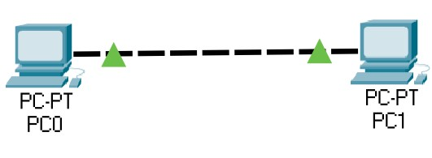 | PC-PT PC0 | Computadora como nodo final. Uso doméstico y de trabajo. | 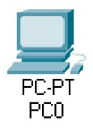 |
| PC-PT PC1 | Computadora como nodo final. Uso doméstico y de trabajo. | 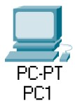 |
En este ejercicio se añadió un repetidor de señal entre ambos dispositivos y se usó cable directo para interconectarlos. A diferencia del primer ejercicio, el cable directo de usó gracias a que son dispositivos de diferente tipo. En este caso la red local que se configuró es la red con la IP 192.168.0.0
Como resultado del ejercicio se presenta el siguiente video además de una tabla con una pequeña descripción de los dispositivos utilizados.
| Red | Elemento de red | Descripción y funcionamiento | Imagen |
|---|---|---|---|
| 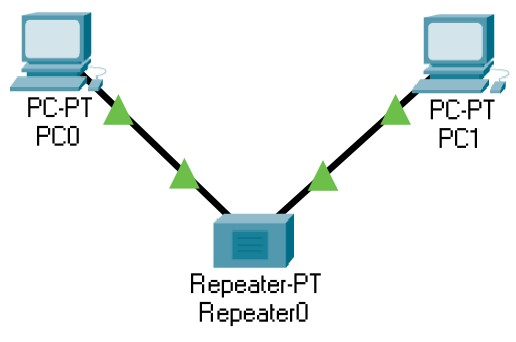 | PC-PT PC0 | Computadora como nodo final. Uso doméstico y de trabajo. | |
| PC-PT PC1 | Computadora como nodo final. Uso doméstico y de trabajo. | ||
| Repeater-PT Repeater0 | Es un elemento de hardware que permite concentrar el tráfico de red que proviene de múltiples ordenadores y regenerar la señal. | 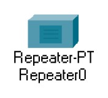 |
En este ejercicio se cambió el repetidor de señal por un switch y se agregó una tercer computadora. Se usó cable directo para interconectarlos. A diferencia del primer ejercicio, el cable directo de usó gracias a que son dispositivos de diferente tipo. En este caso la red local que se configuró es la red con la IP 192.168.0.0
Como resultado del ejercicio se presenta el siguiente video además de una tabla con una pequeña descripción de los dispositivos utilizados.
| Red | Elemento de red | Descripción y funcionamiento | Imagen |
|---|---|---|---|
| 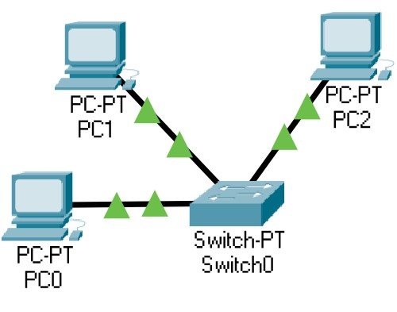 | PC-PT PC0 | Computadora como nodo final. Uso doméstico y de trabajo. | |
| PC-PT PC1 | Computadora como nodo final. Uso doméstico y de trabajo. | ||
| PC-PT PC2 | Computadora como nodo final. Uso doméstico y de trabajo. | 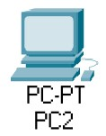 | |
| Switch-PT Switch0 | Un switch permite a los dispositivos conectados compartir información y comunicarse entre sí. | 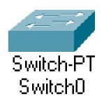 |
La última parte de la práctica ya ilustra una red local con m´s elementos, aquí se usa un repetidor de señal para conectar dos switches con 3 computadoras cada uno. Aquí hay un caso especial del uso de cable cruzado entre repetidores y switches. En este caso la red local que se configuró es la red con la IP 192.168.0.0
Como resultado del ejercicio se presenta el siguiente video además de una tabla con una pequeña descripción de los dispositivos utilizados.
| Red | Elemento de red | Descripción y funcionamiento | Imagen |
|---|---|---|---|
| 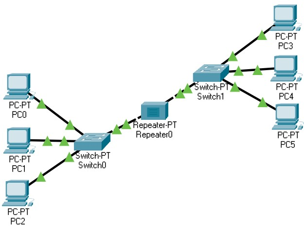 | PC-PT PC0 | Computadora como nodo final. Uso doméstico y de trabajo. | |
| PC-PT PC1 | Computadora como nodo final. Uso doméstico y de trabajo. | ||
| PC-PT PC2 | Computadora como nodo final. Uso doméstico y de trabajo. | ||
| PC-PT PC3 | Computadora como nodo final. Uso doméstico y de trabajo. | 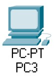 | |
| PC-PT PC4 | Computadora como nodo final. Uso doméstico y de trabajo. | 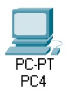 | |
| PC-PT PC5 | Computadora como nodo final. Uso doméstico y de trabajo. | 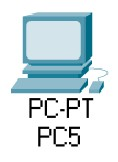 | |
| Repeater-PT Repeater0 | Es un elemento de hardware que permite concentrar el tráfico de red que proviene de múltiples ordenadores y regenerar la señal. | ||
| Switch-PT Switch0 | Un switch permite a los dispositivos conectados compartir información y comunicarse entre sí. | ||
| Switch-PT Switch1 | Un switch permite a los dispositivos conectados compartir información y comunicarse entre sí. | 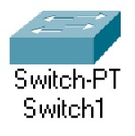 |
Realización de una tabla comparativa evaluando el tipo de cable (cruzado y directo) dependiendo de los dispositivos y como se conectan.
| Computadora | Repetidor | Switch | |
|---|---|---|---|
| Computadora | Cable Cruzado | Cable Directo | Cable Directo |
| Repetidor | Cable Directo | Cable Cruzado | Cable Cruzado |
| Switch | Cable Directo | Cable Cruzado | Cable Cruzado |
Conclusión
- Utilizando el programa de Packet Tracer de Cisco, se simularon distintas redes de computadora, asignando a las computadoras las IP pertenecientes a la red 192.168.0.0, utilizando la ventana de comandos se usó la función ping para verificar la comunicación entre cada una de las computadoras.
- Se elaboró una tabla comparativa por cada red ilustrando cada elemento de la red.
- Se elaboró una tabla comparativa evaluando el tipo de cable (cruzado y directo) dependiendo de los dispositivos y como se conectan.
Referencias
- Devece, C., Guiral, J., & Lapiedra, R. (2011). Introducción a la gestión de sistemas de información en la empresa. Universitat Jaume I.
- Stair, R., & Reynolds, G. (2010). Principles of Information Systems. Boston: Course Technology.
- Cisco. (s.f.). Cisco Networking Academy. Obtenido de Cisco Packet Tracer: https://www.netacad.com/es/courses/packet-tracer